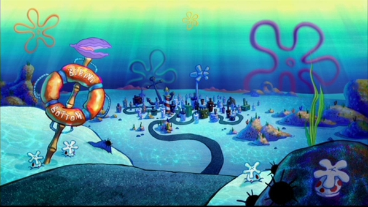

Bob esponja disse: Oi Patrick!, Patrick respondeu: Oi Bob Esponja!
Bob Esponja manda Patrick se matar e assim ele o fez.
Em Sirí Cascudo, Bob Esponja limpa o sangue de Patrick e volta para sua casa, como se nada tivesse acontecido